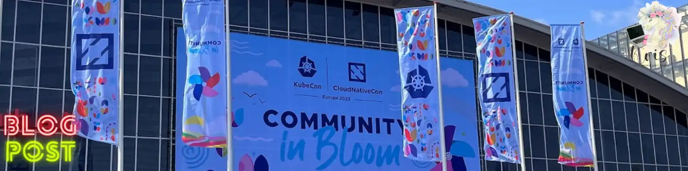
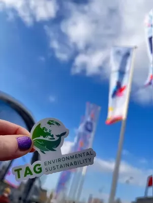
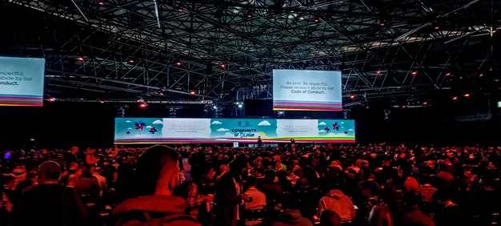
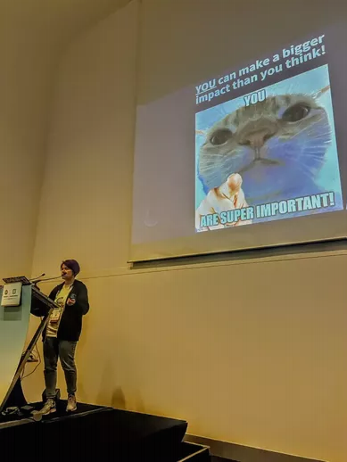
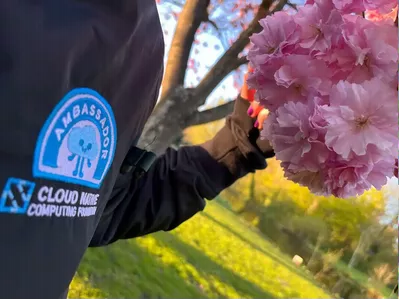
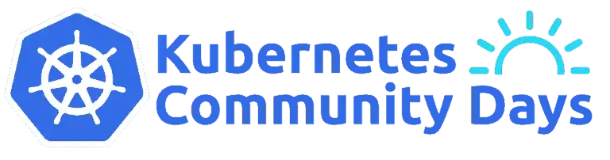

Takeaways From Attending KubeCon+CloudNativeCon Europe 2023, Wearing Many Hats

Last month, 18th-21st of April, KubeCon+CloudNativeCon Europe was happening in Amsterdam in the Netherlands, and it was HUGE! With a fully sold out event, with more than 10000 in-person participants, 5000+ online participants and 20 parallell tracks, it has been the largest conference I’ve attended in-person so far. I attended the event wearing many hats: a speaker, KCD organizer, CNCF ambassador and an attendee. Having these roles gave me an even broader perspective of the event which I want to share with the community😺
I have also done a re-cap of the event together with Michael Levan in our new Kubernetes Unpacked podcast episode, where we talked not only about the latest and greatest technologies that are coming, but also about the top three takeaways from KubeCon+CloudNativeCon EU that you should remember when implementing Kubernetes in production. The episode will be released in a matter of days, you can follow the new updates here: Kubernetes Unpacked
Overall I need to say that the event has been very well-organized - kudos to everyone involved! What specifically caught my attention were all the small things related to accessibility and inclusion: gender pronouns stickers, communication preference stickers and greeting preference pins, all-gender bathrooms, tasty vegan food options, creative corner where you could draw or build lego, handicap accessibility, professional security and crowd management, and probably much more. It was clear that the event organization was extremelly well thought through in order to make it as inclusive, safe and accessible for everyone as possible.
What about the content? 🤔
Trends and session highlights
With 20 parallell tracks it becomes extremely challenging to prioritize, and it’s humanly impossible to attend all of the sessions in-person. Fortunately there are recordings available on YouTube, and I’m still going through those, but I would like to share with you some the sessions that I enjoyed.
First, I’ve pointed out for myself some overall trends in terms of content that gained significant interest from the community:
🪷 Multi-Everything: multi-cloud, multi-cluster, multi-tenancy. When it comes to enterprise reality, the answer is not always black and white. Many implementation projects become pretty complicated due to requirements like having hybrid workloads or multi-cloud infrastructure. How to implement such projects in a secure, scalable and production-ready way? Quite a few sessions shed light on this topic and demonstrated some of the tools like Cilium, ArgoCD, Crossplane and a few others that can make the implementation journey easier for the organizations.
🪷 GitOps. This domain was also getting a lot of attention, both from the perspective of tools and organizational culture and processes. There were some good sessions about running GitOps tools in production, at scale. There was also a very good panel discussion where attendees could bring up their own challenges with implementing GitOps in enterprise setting.
🪷 Networking. This domain will always be relevant when it comes to Kubernetes, because networking in Kubernetes is advanced and requires time, patience and good helper tools to master. During the conference many sessions were dedicated to service mesh, eBPF, network policies. It was especially interesting to look into more advanced use cases for connecting clusters running in different cloud offerings or in highly restricted environments.
🪷 Sustainability. My personal favorite. Sustainability in tech is clearly an emerging domain that is gaining more attention from the community. It was great seeing multiple sessions throughout the conference related to sustainability. CNCF TAG Environmental Sustainability, which I’ll mention in more detail later, got broader visibility as well. Focus of this domain is to look into how tech industry and cloud native space can reduce it’s climate footprint: by reducing energy consumtion, wasted resources, carbon and water footprint, etc. I’m also really happy that I got a chance to spread awareness on this topic with my presentation at the conference. It’s clear that this domain will get even more attention in the future.
Below I would like to highlight some of the sessions that I enjoyed, grouped by respective domains:
Azure Day with Kubernetes
During the co-location events pre-day, which was happening the day before the main conference, there was a bunch of different talks you could attend that were related to a single domain: Cilium, WebAssembly, Argo, Observability, etc. One of the events was arranged by Microsoft and was focused on AKS. Many new enhancements and capabilities in AKS were announced that day like long-term support (LTS), service mesh add-on for Istio, OpenCost for AKS for cost visibility, and so much more.
🌳 If you’re working with Azure Kubernetes Service (AKS) I would recommend to register for the post-event recordings: Azure Day with Kubernetes Preday at KubeCon + CloudNativeCon Europe 2023
GitOps
🌳 Insightful panel discussion where OpenGitOps working group members discussed why GitOps is a gamechanger for modern software delivery. There were also some good questions from the audience regarding challenges of implementing GitOps in the organizations. How GitOps Changed Our Lives & Can Change Yours Too! - Priyanka Ravi, Weaveworks; Christian Hernandez, Red Hat; Filip Jansson, Strålfors; Roberth Strand, Amesto Fortytwo; Leigh Capili, VMware
Networking
Isovalent had a strong presence at KubeCon+CloudNativeCon EU, and it was clear that there was a lot of interest and engagement from the participants as well. I find both Raymond and Liz to be very good speakers, and it’s no surprise for me that this time I enjoyed their sessions, too.
🌳 Adopting Network Policies in Highly Secure Environments - Raymond de Jong, Isovalent
🌳 This session was very interesting since Liz demoed how Cilium Mesh, which is a newly released component, that can be used to connect workloads running on Kubernetes clusters in different cloud providers, or even outside of Kubernetes. Keeping It Simple: Cilium Networking for Multicloud Kubernetes - Liz Rice, Isovalent
Backstage
I got really inspired from some sessions about Backstage. It was very interesting to hear about how organizations adopted Backstage not only for better developer documentation, but also for automatic generation of common templates, asset management and categorization of data for security audits, and much more. If you haven’t heard about Backstage before or would like to learn more about use cases where it can be used, do check out the sessions below.
🌳 Paved Paths Leading the Way to Compliance - Kasper Borg Nissen & Brian Nielsen, Lunar
Div Kubernetes topics
🌳 Keynote: Enabling Real-Time Media in Kubernetes - Giles Heron, Principal Engineer, Cisco
🌳 Very fun and entertaining session where we got to take a selfie with an actual Boston Dynamics robot - how often does that happen?😁 This session was a story of how Liquid Reply is building a PoC for running robot-specific software with WebAssembly and Kubernetes on the edge. Love, Death and Robots - with Wasm & K8s on Boston Dynamics Spot - Max Körbächer, Liquid Reply
🌳 Quite interesting and easy-to-follow session on how you can use additional capabilities of ArgoCD to test it’s control plane at scale, with thousands of deployed applications. Unlocking Argo CD’s Hidden Tools for Chaos Engineering - Featuring VCluster and More - Dan Garfield & Brandon Phillips, Codefresh
Community and open source
The focus of the conference was not only on the technical topics but also on the topic of community, open source development and how keep it blooming, avoid burnout and transfer knowledge to upcoming contributors in a sustainable manner.
🌳 In this keynote I loved the analogy between growing new plants and melting glaciers with knowledge sharing and preservation in the cloud native and open source community. Keynote: Gardens and Glaciers: Saving Knowledge Through Succession - Emily Fox, Apple
🌳 Kelsey is inspiring once again. No slides, just an open conversation with the participants about community, customers, monetization and the ways of balancing it in a healthy way. From Community to Customers - Kelsey Hightower, Google Cloud
Sustainability
In addition to me presenting on the topic of sustainability in Kubernetes I attended a bunch of sessions that were related to the same domain. Some of them I would like to highlight below. It was cool to see Microsoft announcing carbon-aware scaler for KEDA in AKS during the keynote session. It was also interesting to hear stories and suggestions on ways to reduce energy consumption and use server resources more efficiently.
🌳 Minimizing Energy Consumption in Bare Metal K8s Clusters - Marco Schröder & David Meder-Marouelli
🌳 Evolution of on-Node Adaptive Power Tuning - Atanas Atanasov, Intel & Rimma Iontel, Red Hat
TAG Environmental Sustainability
Finally I would like to highlight CNCF Technical Advisory Group (TAG) Environmental Sustainability which I’ve now joined as a member and contributor. The main goal of this working group is to raise awareness of environmental sustainability as a key element of open source development and support projects which foster an understanding of energy drivers. By joining this group you get a chance to meet and collaborate with like-minded people with passion for sustainability and building greener software.
TAG Environmental Sustainability arranges 2 meetings a month so if you’re interested in the above topics as well, join us! More information is provided here: TAG Environmental Sustainability
During KubeCon+CloudNativeCon EU I joined TAG project meeting which was filled with important and sometimes even heated discussions. Unfortunately it wasn’t recorded but there was a good session from the TAG’s board members on the current state of green software in the cloud native space: The State of Green Software + Cloud Native - Leonard Vincent Simon Pahlke, Liquid Reply & Cara Delia

To sum it up, a lot of great content was presented during the conference, and it’s tough to highlight just one or two sessions. Nevertheless, if you loved some of the sessions I highlighted, do let me know and let’s discuss!🤗
Takeaways and tips from…
There are some reflections and tips that I gathered from attending KubeCon+CloudNativeCon EU in multiple roles, and I hope that some of these reflections can be insightful for you or even inspire you to attend the conference next time. Maybe even in a new role as a speaker or a CNCF Ambassador😉
Attendee
Attending the conference of such scale can quickly become very overwhelming and quite many tend to get a fear of missing out (FOMO). For me it was challenging but crucial to keep a balance of participating in sessions, engaging with the community members and getting quiet, alone time to bring myself back and re-charge.
Here are a few tips that help me get the most out of the conference and at the same time take care of myself:
🦋 Plan beforehand which sessions you want to prioritize and attend in-person, for example for additional engagement with the speaker.
🦋 Expect that plans may change in such a dynamic environment: sessions may get fully-booked before you get in, or you meet an old friend and use some additional time to catch up. Make your peace with it, evaluate what you should prioritize there and then and what can be covered by alternative options (f.ex., session recordings) at a later point.
🦋 Don’t be afraid to ask questions or provide constructive feedback to the speaker. Engagement boosts innovation, content improvements and fosters new ideas,- and is always appreciated! There are no stupid questions and a lot of effort is put into making such events a safe and inclusive space for sharing your opinion on the topic or asking questions. If you’re still hesitant, take a look at the event’s code of conduct that all the attendees are obliged to follow - it will help you understand how the rest of the audience is expected to behave in situations like this and who to contact when the code of conduct is violated.
🦋 Challenge yourself and see if you can come out of the comfort zone and get to know a new community member. For example, one day I chose to go alone for lunch, but I didn’t get to sit all by myself for too long😸 Quite promptly other attendees joined me and I got to know new people, engage in interesting conversations around cloud native technologies, and network. You can learn a lot from the experience of others and at the same time contribute to making the event more inclusive.
🦋 Remember to eat, drink water and re-charge. It’s easy to forget these basic things, but they’re crucial if you want to have enough energy and focus throughout the whole event. For me, taking breaks and short walks, eating lunch outside, getting some fresh air regularly helped a ton. Getting good, stable sleep also helped me a lot to stay focused, so I would definitely urge you to not downprioritize this.

Finally, please note that all the sessions are being recorded, and recordings are published in a matter of 1-2 weeks after the event so you can always catch up with the rest of the sessions at a later point. For instance, the playlist from KubeCon+CloudNativeCon EU was published after ca. one week and is available on YouTube: KubeCon + CloudNativeCon Europe 2023.
Speaker
Speaking at KubeCon+CloudNativeCon EU is one of the greatest achievement for me as a technical speaker. I always looked up to the speakers presenting at conferences of such scale, and I have always thought that there is almost no chance of getting in as a “smaller”, less known content creator or tech community member. I was proven wrong. I had an idea, a topic that I am extremely passionate about, that I wanted to share it with the world and with the tech community. I was eager to talk about it and I took a chance and submitted a proposal…and I got chosen. Next time it can be YOU! 👋
If you have learned something that you feel others can benefit from in the community, you should definitely share it. If you have learned something that can become a talk, you should go for it and apply to the events that resonate with you. Independent of how big or popular those events are. It’s scary, yes, but you have nothing to lose by applying. You may miss out on a lot though if you don’t apply😊

My presentation at KubeCon+CloudNativeCon EU felt extra special, because I got a chance to talk about something that I’m very focused on both in my personal and work life - sustainability. I talked about how sustainable software engineering principles can be applied to Kubernetes ecosystem, and what concrete actions we can take in order to make our Kubernetes workloads more eco-friendly. The engagement was really good and I enjoyed all the discussions that my presentation sparked - as I mentioned in the section above, sustainability in tech is finally getting more attention and engagement from the community, and I’m looking forward to spreading more awareness on the importance of sustainability in software development.
🚀 If you would like to watch my presentation, the recording is available on YouTube: Be the Change Our Planet Seeks: How YOU Can Contribute to Running Environment-Friendly Workloads on Kubernetes - by Kristina Devochko
CNCF Ambassador
CNCF Ambassadors are an extension of CNCF, furthering the mission of “making cloud native ubiquitous” through community leadership and mentorship. CNCF Ambassadors are elected twice per year and anyone can apply. If you’re contributing back to the cloud native and open source community by creating technical content, organizing events, speaking or mentoring, you should consider applying for the program. Here’s a summary of Spring 2023 election which was the first term I got accepted to: Introducing our Spring 2023 Cloud Native Ambassadors!
KubeCon+CloudNativeCon EU was a great opportunity to meet fellow ambassadors from all over the world and engage in interesting discussions around cloud native technologies, content creation and community contributions. It’s also a great arena to brainstorm upcoming content and collaborate on creating some of that content together to bring even more value to the community.

Another reflection I really want to share when it comes to CNCF Ambassador community is the atmosphere of inclusion.
I’m an introvert and am not always mastering social events and get-to-know parties in a good way, therefore attending events where I don’t know that many people can quickly become challenging. As part of the conference I attended an Ambassador breakfast for all the CNCF Ambassadors, where I didn’t know that many just yet. As I was about to sit down for myself, a few other ambassadors spotted it and invited me to their table, which was very sweet and nice of them to do.
I would like to send these kind fellow ambassadors a shoutout and a warm Thank You for including me in their company - people like you give me even more inspiration to do the same, when I see someone who may feel lonely or uncomfortable at community events💖
KCD Organizer

Kubernetes Community Days (KCD) are smaller versions of KubeCon+CloudNativeCon conference that are arranged by tech community members all over the globe, with support from CNCF. The goal of these events is to foster collaboration, networking, knowledge sharing around topics of open source, cloud native and Kubernetes in the local tech communities.
Any city can arrange a KCD and there’s a helpful checklist with extensive information available on GitHub that can come in handy if you consider arranging a KCD event yourself at some point: cncf/kubernetes-community-days.
During KubeCon+CloudNativeCon EU there were multiple opportunities to engage with fellow KCD organizers, both new and experienced ones. There was a booth available where at any time you could go and have a chat with some of the KCD organizers about anything around event planning, tips and tricks, etc.
🚀 I recommend you to check out following session: Grow Your Own Community! Lessons Learned from Running Kubernetes Community Days Across Europe - Matt Jarvis, Snyk; Annalisa Gennaro, SparkFabrik; Max Korbacher, Liquid Reply; Alessandro Vozza, Solo.io; Paula Kennedy, Syntasso. This was a very interesting panel discussion where organizers from some of the biggest Kubernetes Community Days in Europe shared their experiences, challenges, pitfalls, tips and tricks when it comes to organizing such community events at scale.
Myself, together with a few amazing community members, will be arranging KCD Norway in January 2024 so if you’re planning a trip to Oslo or would like to speak at our event, do reach out! All the updates regarding the event will be published at CNCF - KCD Norway, so stay tuned! 😼
Summing it up…
As you can see from the length of this blog post there have been a lot impressions, reflections and learnings from attending KubeCon+CloudNativeCon Europe😸
Is it worth attending?
I would say yes, absolutely! I see two main reasons for this: firstly, there are so many different activities to choose from that most of us will be able to find something that brings value to oneself. Secondly, it’s one of the rare opportunities where a large tech community is gathered in one place! Why not use this time to catch up with your community friends or get to know some new ones?😉
All in all, I think that if you have a possibility to join, it’s definitely worth to experience it for yourself.
Community in Bloom - with something for everyone’s taste.
That’s it from me this time, thanks for checking in!💖
If this article was helpful, I’d love to hear about it! You can reach out to me on LinkedIn, Twitter, GitHub or by using the contact form on this page.😺
Stay secure, stay safe.
Till we connect again!😻